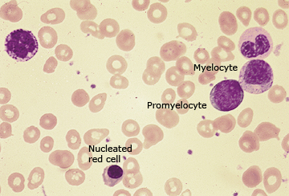

Leukoerythroblastic peripheral blood smear

Leukoerythroblastic peripheral blood smear showing the presence of nucleated red cells and immature white cells. This pattern occurs with marrow replacement, usually due to fibrosis that may be idiopathic (eg, primary myelofibrosis) or reactive to conditions such as metastatic cancer.
Courtesy of Carola von Kapff, SH (ASCP).
Graphic 68110 Version 3.0
Normal peripheral blood smear

High-power view of a normal peripheral blood smear. Several platelets (arrowheads) and a normal lymphocyte (arrow) can also be seen. The red cells are of relatively uniform size and shape. The diameter of the normal red cell should approximate that of the nucleus of the small lymphocyte; central pallor (dashed arrow) should equal one-third of its diameter.
Courtesy of Carola von Kapff, SH (ASCP).
Graphic 59683 Version 5.0